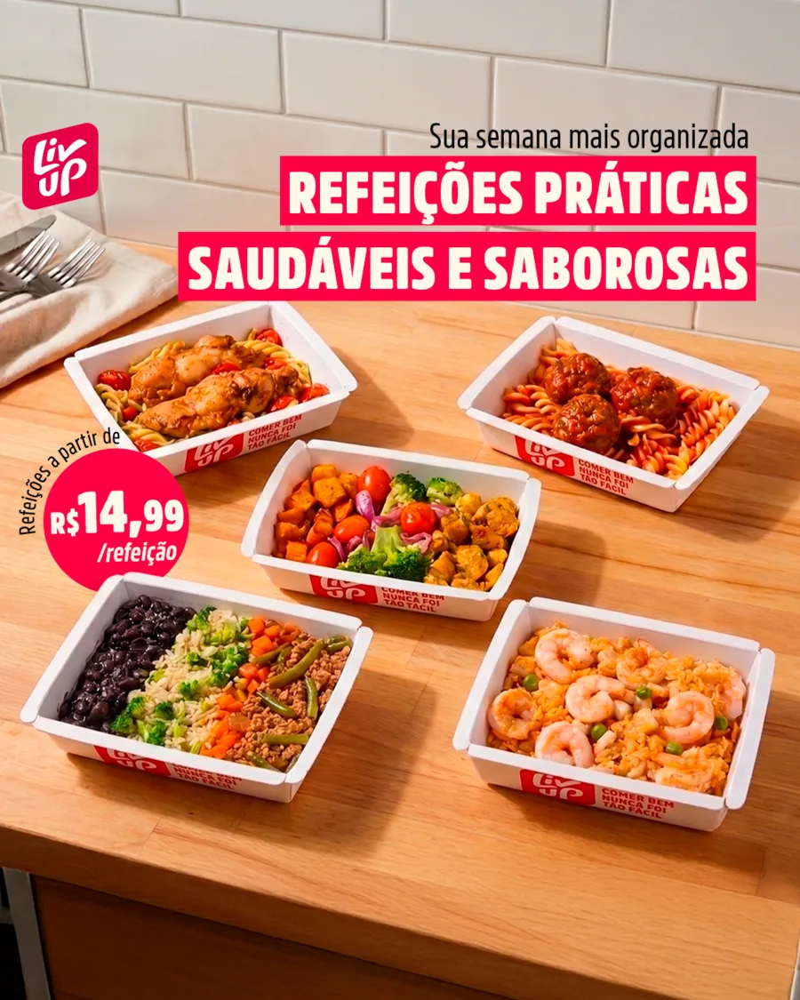

Criativo é o gargalo da sua mídia.
A gente destrava. Criativos em volume e mídia operados como um único sistema, guiados por método e não por achismo.
Agendar diagnóstico gratuito
Sem compromisso. Resposta em até 24h úteis.



Volume é a nossa assinatura
EstáticoBenefício, prova social, infográfico. Dezenas por mês, cada um com hipótese.
UGCDepoimento, review, antes e depois. Gente de verdade falando com gente de verdade.
Alta produçãoAnúncio editado e branded content, quando a marca pede peso.
O Motor Guará
1Diagnóstico 360°Lemos site, oferta e mídia antes de qualquer criativo.
2Matriz de criativosPersona, ângulo e modelo viram uma grade de testes.
3Produção em escalaO ciclo nunca para: cada resultado vira insumo pro próximo criativo.
Marcas que escalam com a gente


[MÉTRICA]
Marca DNVB pro-age contra o movimento anti-idade.
Operação completa da máquina digital de aquisição: criativos, mídia paga e construção de todas as linhas de comunicação da marca. Prova real, sem enrolação.
Diagnóstico de criativo gratuito
Conta pra gente como está seu anúncio hoje. A gente te devolve um caminho prático, sem enrolação.
Agendar meu diagnóstico
Sem compromisso, a gente te chama em até 24h úteis